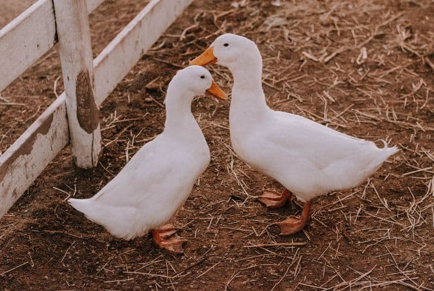

OUTROS ANIMAIS
Raça:Netherland Dwarf
Idade: 7 meses
Gênero: Fêmea
Altura: Pequeno
Cor do pelo: Preto
Peso: 6 kg
Adotar animalRaça: Jabuti Piranga
Idade: 1 ano
Gênero: Macho
Altura: Pequeno
Cor do pelo: Não possui pelo
Peso: 5 kg
Adotar animal

Raça: Pato de pequim
Idade: 2 anos
Gênero: Macho
Altura: Mediano
Cor do pelo: Branco
Peso: 8 kg
Adotar animal